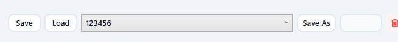
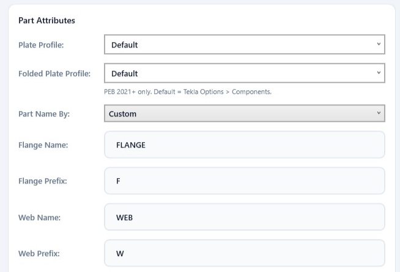
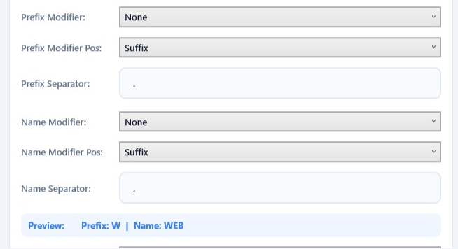
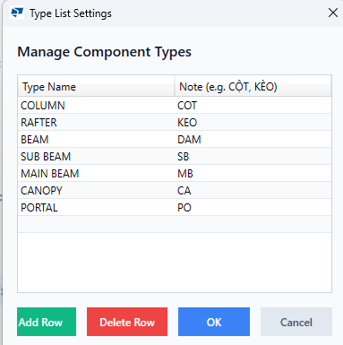

Hướng dẫn chi tiết các cài đặt trong PEB Member
Cửa sổ iViD PEB Part Settings quyết định tên, prefix và class mà PEB Member ghi vào từng bản thép khi bạn bấm Draw hay Update. Đặt đúng một lần, cả dự án sẽ có quy ước đặt tên thống nhất — không phải sửa tay từng cấu kiện trong Tekla. Bài này giải thích lần lượt từng ô trong cửa sổ đó, kèm ví dụ kết quả thực tế.

1. Mở cửa sổ cài đặt
Trên giao diện PEB Member, bấm nút ⚙ cạnh ô Project Material để mở cửa sổ iViD PEB Part Settings.
- Cài đặt lưu trong
%AppData%\PEBToolsVN\Attributes\standard.xml— theo máy tính, không theo model. Mở model nào cũng dùng chung bộ cài đặt này. - Phần mềm đọc lại cài đặt ở mỗi lần bấm Draw hoặc Update, nên sửa xong bấm Save Settings là dùng được ngay, không cần khởi động lại.
- Cài đặt chỉ ảnh hưởng tới cấu kiện vẽ mới hoặc cấu kiện bạn Update — cấu kiện đã có trong model không tự đổi tên.
2. Quản lý bộ cài đặt (Save / Load / Save As)
Hàng nút trên cùng cho phép giữ nhiều bộ cài đặt khác nhau — ví dụ mỗi khách hàng, mỗi tiêu chuẩn đặt tên một bộ.

| Nút | Tác dụng |
|---|---|
| Danh sách | Liệt kê các bộ cài đặt đã lưu (mỗi bộ là một file XML trong thư mục Attributes). |
| Save | Ghi các giá trị đang hiển thị vào bộ đang chọn trong danh sách. |
| Load | Nạp bộ đang chọn lên cửa sổ để xem hoặc sửa. |
| Save As | Gõ tên vào ô bên cạnh rồi bấm để tạo một bộ mới. |
| 🗑 (nút đỏ) | Xoá bộ đang chọn. Riêng bộ standard không xoá được. |
| Save Settings | Nút xanh cuối cửa sổ: lưu vào bộ standard và đóng cửa sổ. |
| Cancel | Đóng, bỏ mọi thay đổi chưa lưu. |
⚠️ Lệnh Draw và Update luôn dùng bộ standard. Muốn áp dụng một bộ khác, hãy chọn bộ đó trong danh sách → bấm Load → rồi bấm Save Settings để ghi đè lên standard.
3. Nhóm Part Attributes
Nhóm này quyết định mọi thứ liên quan tới từng bản thép (bản cánh trên, bản cánh dưới, bản bụng) bên trong cấu kiện PEB.

3.1. Plate Profile và Folded Plate Profile
Hai ô này chọn tên profile tấm mà component PEB dùng để tạo bản thép — tương ứng hai ô Plate profile name và Folded plate profile name trong hộp thoại PEB Member gốc.
Default: để component tự lấy theo Tekla Options > Components (thường làPL).- Danh sách còn lại là các prefix profile tấm đọc từ catalog của Tekla đang mở (PL, PLT, FPL, BL…). Khi Tekla chưa chạy, phần mềm hiển thị danh sách thông dụng để bạn vẫn chọn được.
- Ô cho phép gõ tay, hữu ích khi prefix chỉ có trong catalog riêng của công ty.
💡 Hai ô này chỉ có tác dụng với PEB 2021 trở lên — bản PEB của Tekla 2016 – 2020 không có hai thuộc tính đó và sẽ bỏ qua. Tên profile phân biệt chữ hoa/thường: nên chọn trong danh sách; nếu gõ sai tên, component sẽ quay về giá trị mặc định của Tekla.
3.2. Part Name By — cách đặt tên bản thép
| Lựa chọn | Kết quả |
|---|---|
| Custom | Tên bản thép lấy theo hai ô Flange Name và Web Name bên dưới (có thể ghép thêm ghi chú loại — xem mục 3.5). |
| Full Assembly Profile | Tên mọi bản thép là chuỗi tiết diện đầy đủ của cấu kiện, ví dụ W(300-500)x6+F186x8. Khi chọn mục này, các ô Flange Name, Web Name và nhóm Name Modifier bị mờ đi vì không còn tác dụng. |
3.3. Tên và prefix cho bản cánh, bản bụng
- Flange Name / Web Name — tên bản cánh và bản bụng, mặc định
FLANGEvàWEB. Cả bản cánh trên và bản cánh dưới dùng chung tên này. - Flange Prefix / Web Prefix — prefix đánh số bản thép trong Tekla, mặc định
FvàW.
3.4. Prefix Modifier — ghép chiều dày vào prefix

Ba ô Prefix Modifier, Prefix Modifier Pos và Prefix Separator làm việc cùng nhau: chọn Thickness để ghép chiều dày của chính bản thép đó vào prefix, chọn vị trí đặt trước (Prefix) hay sau (Suffix), và ký tự ngăn cách nếu cần. Ví dụ với bản cánh dày 8 mm, bản bụng dày 6 mm:
| Modifier | Pos | Separator | Prefix bản cánh | Prefix bản bụng |
|---|---|---|---|---|
| None | — | — | F | W |
| Thickness | Prefix | (để trống) | 8F | 6W |
| Thickness | Prefix | - | 8-F | 6-W |
| Thickness | Suffix | . | F.8 | W.6 |
Chiều dày lấy phần nguyên theo mm (8.0 → 8).
3.5. Name Modifier — ghép ghi chú loại vào tên
Tương tự nhóm trên nhưng áp dụng cho tên bản thép, và thứ được ghép vào là ghi chú của loại cấu kiện khai báo trong danh sách Type (mục 4.2). Ví dụ loại Rafter có ghi chú KÈO:
| Modifier | Pos | Separator | Tên bản cánh | Tên bản bụng |
|---|---|---|---|---|
| None | — | — | FLANGE | WEB |
| Type Note | Prefix | - | KÈO-FLANGE | KÈO-WEB |
| Type Note | Suffix | _ | FLANGE_KÈO | WEB_KÈO |
Nếu loại cấu kiện của dòng đang vẽ chưa có ghi chú trong danh sách Type, tên giữ nguyên như khi chọn None.
3.6. Ô Preview
Dải màu xanh Preview hiển thị ngay kết quả dạng Prefix: … | Name: … mỗi khi bạn đổi một ô. Đây là ví dụ minh hoạ cho bản bụng, lấy chiều dày mẫu 8 mm và ghi chú của loại đầu tiên trong danh sách Type — dùng để kiểm tra nhanh quy tắc trước khi lưu.
3.7. Class By và User Class
| Lựa chọn | Class ghi vào bản thép |
|---|---|
| By Thickness | Bằng chiều dày của chính bản thép đó — bản cánh dày 8 được class 8, bản bụng dày 6 được class 6. Nhờ vậy màu trong model phản ánh đúng chiều dày thép. |
| By User | Tất cả bản thép dùng chung giá trị gõ trong ô User Class (mặc định 99). Ô này chỉ mở khi chọn By User. |
| By Section, By Prefix | Đang hoàn thiện — hiện tại cho kết quả giống By User. |
4. Nhóm Assembly & General

4.1. Name By — tên cấu kiện (Assembly)
| Lựa chọn | Tên assembly trong Tekla |
|---|---|
| Section | Chuỗi tiết diện của dòng, ví dụ W(300-500)x6+F186x8. |
| Type | Tên loại viết hoa, ví dụ RAFTER, COLUMN. |
Prefix của assembly luôn lấy từ cột Prefix trong bảng PEB Member (ví dụ RF1), không phụ thuộc cài đặt này.
4.2. Type List — Manage Types…
Bấm Manage Types… để mở bảng danh sách loại cấu kiện gồm hai cột:
- Type Name — tên loại, trùng với giá trị bạn gõ ở cột Type trong bảng PEB Member (Column, Rafter, Canopy…).
- Note — ghi chú đi kèm, ví dụ
CỘT,KÈO. Ghi chú này chính là thứ được ghép vào tên bản thép khi Name Modifier = Type Note.
Các nút Add Row thêm dòng mới, Delete Row xoá dòng đang chọn, OK giữ thay đổi (nhớ bấm tiếp Save Settings để ghi xuống file), Cancel bỏ qua.

5. Ví dụ hoàn chỉnh
Cấu kiện W(300-500)x6+F186x8, cột Type là Rafter (ghi chú KÈO), cột Prefix là RF1, vật liệu SS400. Với cài đặt: Part Name By = Custom, Prefix Modifier = Thickness / Prefix / không ngăn cách, Name Modifier = Type Note / Prefix / ngăn cách -, Class By = By Thickness, Name By = Section:
| Đối tượng | Name | Prefix | Class |
|---|---|---|---|
| Bản cánh trên và dưới (dày 8) | KÈO-FLANGE | 8F | 8 |
| Bản bụng (dày 6) | KÈO-WEB | 6W | 6 |
| Cấu kiện (Assembly) | W(300-500)x6+F186x8 | RF1 | — |
Đổi Name By sang Type thì tên assembly thành RAFTER; đổi Part Name By sang Full Assembly Profile thì cả ba bản thép mang tên W(300-500)x6+F186x8.
6. Thuộc tính Tekla tương ứng
Dành cho người cần đối chiếu với hộp thoại PEB Member gốc hoặc file thuộc tính xuất ra:
| Cài đặt | Thuộc tính component PEB |
|---|---|
| Flange Name / Prefix / Class | TopFlg1Name, BotFlg1Name / TopFlg1Prefix, BotFlg1Prefix / TopFlg1Class, BotFlg1Class |
| Web Name / Prefix / Class | Web1Name / Web1Prefix / Web1Class |
| Name By + cột Prefix của bảng | MainAsmbName, MainAsmbPrefix |
| Plate Profile / Folded Plate Profile | PlatePrefix / FPlatePrefix (chỉ PEB 2021+) |
7. Mẹo và lưu ý
- Áp dụng cho cấu kiện đã vẽ: chọn chúng trong Tekla rồi bấm Update — tên, prefix và class sẽ được ghi lại theo cài đặt mới.
- Dùng chung cho cả nhóm: chép file
%AppData%\PEBToolsVN\Attributes\standard.xmlsang máy khác (cùng đường dẫn) là cả nhóm có chung quy ước đặt tên. - Mỗi dự án một bộ: dùng Save As đặt tên theo dự án, khi cần thì Load rồi Save Settings.
- Danh sách profile tấm: mở Tekla và mở model trước khi vào Settings thì danh sách Plate Profile mới đầy đủ theo catalog của bạn.
- Class theo chiều dày giúp model tự phân màu theo chiều dày thép, rất tiện khi kiểm tra bản vẽ và bóc tách.
PEB Member settings explained, option by option
The iViD PEB Part Settings window decides the name, prefix and class PEB Member writes into every plate when you click Draw or Update. Set it once and the whole project follows the same naming convention — no more renaming parts by hand in Tekla. This article walks through every field in that window with real result examples.
1. Opening the settings window
In the PEB Member window, click the ⚙ button next to Project Material to open iViD PEB Part Settings.
- Settings are stored in
%AppData%\PEBToolsVN\Attributes\standard.xml— per computer, not per model, so every model you open uses the same set. - They are re-read on every Draw and Update, so a change takes effect as soon as you click Save Settings — no restart needed.
- They affect members you draw next or explicitly Update; members already in the model are not renamed on their own.
2. Managing settings sets (Save / Load / Save As)
The button row at the top keeps several settings sets side by side — one per client or per naming standard, for example.
| Button | What it does |
|---|---|
| The list | All saved sets (each one is an XML file in the Attributes folder). |
| Save | Writes the values currently on screen into the selected set. |
| Load | Loads the selected set into the window for review or editing. |
| Save As | Type a name in the box next to it to create a new set. |
| 🗑 (red button) | Deletes the selected set. The standard set cannot be deleted. |
| Save Settings | The blue button at the bottom: saves into the standard set and closes the window. |
| Cancel | Closes and discards unsaved changes. |
⚠️ Draw and Update always use the standard set. To apply a different one, select it in the list → click Load → then click Save Settings so it overwrites standard.
3. Part Attributes
This group controls everything about the individual plates (top flange, bottom flange, web) inside the PEB member.
3.1. Plate Profile and Folded Plate Profile
These two fields choose the plate profile name the PEB component builds its plates with — the same Plate profile name and Folded plate profile name fields as in the original PEB Member dialog.
Default: let the component follow Tekla Options > Components (usuallyPL).- The rest of the list are plate profile prefixes read from the catalog of the running Tekla (PL, PLT, FPL, BL…). With Tekla closed, a list of common prefixes is shown instead.
- The field is editable, which helps when a prefix only exists in your own company catalog.
💡 These two fields only apply to PEB 2021 and newer; the PEB core shipped with Tekla 2016 – 2020 has no such attributes and ignores them. Profile names are case-sensitive, so pick from the list — a name that is not in the catalog falls back to Tekla's default.
3.2. Part Name By
| Option | Result |
|---|---|
| Custom | Plate names come from the Flange Name and Web Name fields below (optionally with the type note attached — see 3.5). |
| Full Assembly Profile | Every plate is named with the member's full profile string, e.g. W(300-500)x6+F186x8. Choosing this greys out Flange Name, Web Name and the Name Modifier fields, which no longer apply. |
3.3. Flange and web names and prefixes
- Flange Name / Web Name — plate names,
FLANGEandWEBby default. Both the top and bottom flange use the same name. - Flange Prefix / Web Prefix — the part-numbering prefixes in Tekla,
FandWby default.
3.4. Prefix Modifier — adding the thickness to the prefix
Prefix Modifier, Prefix Modifier Pos and Prefix Separator work together: pick Thickness to attach the plate's own thickness to the prefix, choose whether it goes before (Prefix) or after (Suffix), and add a separator if you want one. With an 8 mm flange and a 6 mm web:
| Modifier | Pos | Separator | Flange prefix | Web prefix |
|---|---|---|---|---|
| None | — | — | F | W |
| Thickness | Prefix | (empty) | 8F | 6W |
| Thickness | Prefix | - | 8-F | 6-W |
| Thickness | Suffix | . | F.8 | W.6 |
The thickness is used as a whole number of millimetres (8.0 → 8).
3.5. Name Modifier — adding the type note to the name
The same idea applied to plate names, where what gets attached is the note of the member type defined in the Type list (see 4.2). With the Rafter type carrying the note KÈO:
| Modifier | Pos | Separator | Flange name | Web name |
|---|---|---|---|---|
| None | — | — | FLANGE | WEB |
| Type Note | Prefix | - | KÈO-FLANGE | KÈO-WEB |
| Type Note | Suffix | _ | FLANGE_KÈO | WEB_KÈO |
If the row's member type has no note in the Type list, the name stays exactly as with None.
3.6. The Preview box
The blue Preview strip shows the result as Prefix: … | Name: … every time you change a field. It illustrates the web plate using a sample thickness of 8 mm and the note of the first type in the list — a quick way to check the rule before saving.
3.7. Class By and User Class
| Option | Class written to the plate |
|---|---|
| By Thickness | The plate's own thickness — an 8 mm flange gets class 8, a 6 mm web gets class 6, so model colors follow plate thickness. |
| By User | Every plate uses the value typed in User Class (99 by default). The field is only enabled for this option. |
| By Section, By Prefix | Still being finished — they currently behave like By User. |
4. Assembly & General
4.1. Name By — the assembly name
| Option | Assembly name in Tekla |
|---|---|
| Section | The row's profile string, e.g. W(300-500)x6+F186x8. |
| Type | The member type in capitals, e.g. RAFTER, COLUMN. |
The assembly prefix always comes from the Prefix column of the PEB Member table (e.g. RF1), regardless of this setting.
4.2. Type List — Manage Types…
Click Manage Types… to open the member-type list with two columns:
- Type Name — the type, matching what you type in the Type column of the PEB Member table (Column, Rafter, Canopy…).
- Note — the note that goes with it, e.g.
CỘT,KÈO. This is exactly what gets attached to plate names when Name Modifier = Type Note.
Add Row adds an entry, Delete Row removes the selected one, OK keeps the changes (click Save Settings afterwards to write them to disk) and Cancel discards them.
5. A worked example
A member W(300-500)x6+F186x8, Type Rafter (note KÈO), Prefix RF1, material SS400. With Part Name By = Custom, Prefix Modifier = Thickness / Prefix / no separator, Name Modifier = Type Note / Prefix / separator -, Class By = By Thickness and Name By = Section:
| Object | Name | Prefix | Class |
|---|---|---|---|
| Top and bottom flange (8 thick) | KÈO-FLANGE | 8F | 8 |
| Web (6 thick) | KÈO-WEB | 6W | 6 |
| Assembly | W(300-500)x6+F186x8 | RF1 | — |
Switch Name By to Type and the assembly becomes RAFTER; switch Part Name By to Full Assembly Profile and all three plates are named W(300-500)x6+F186x8.
6. Matching Tekla attributes
For anyone cross-checking with the original PEB Member dialog or an exported attribute file:
| Setting | PEB component attribute |
|---|---|
| Flange Name / Prefix / Class | TopFlg1Name, BotFlg1Name / TopFlg1Prefix, BotFlg1Prefix / TopFlg1Class, BotFlg1Class |
| Web Name / Prefix / Class | Web1Name / Web1Prefix / Web1Class |
| Name By + the table's Prefix column | MainAsmbName, MainAsmbPrefix |
| Plate Profile / Folded Plate Profile | PlatePrefix / FPlatePrefix (PEB 2021+ only) |
7. Tips and notes
- Applying to existing members: select them in Tekla and click Update — names, prefixes and classes are rewritten with the new settings.
- Sharing with the team: copy
%AppData%\PEBToolsVN\Attributes\standard.xmlto the same path on another computer and the whole team follows one convention. - One set per project: use Save As with the project name, then Load + Save Settings when you switch back to it.
- Plate profile list: start Tekla and open a model before opening Settings to get the full list from your own catalog.
- Class by thickness makes the model color itself by plate thickness — handy when checking drawings and take-offs.
8. Tải về8. Download
Chọn phiên bản Tekla Structures bạn đang dùng — nút tải sẽ tự trỏ tới đúng gói cài đặt.
Select the Tekla Structures version you use — the download button points to the matching package.

Nhóm Zalo người dùng PEB MemberPEB Member user group on Zalo
Quét mã QR hoặc bấm nút để vào nhóm: hỏi đáp khi sử dụng, báo lỗi và nhận thông báo bản cập nhật mới.
Scan the QR code or use the button to join the group: usage questions, bug reports and new release announcements.
Cài đặt xong một lần là cả dự án có chung quy ước đặt tên. Có ô nào chưa rõ, bạn cứ hỏi trong nhóm Zalo hoặc nhắn Zalo 0969683188. Set it up once and the whole project shares one naming convention. If any field is unclear, ask in the Zalo group or message Zalo 0969683188.